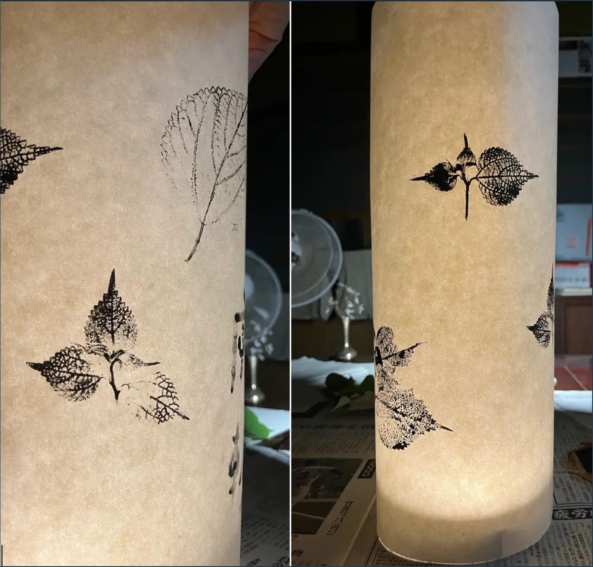

五箇山和紙の灯り
五箇山の和紙と植物を組み合わせ、透過する光と落ちる影の両方を扱った照明の試作です。

- Year
- 2025年
- Place
- 五箇山
- Materials / Method
- 和紙、植物、光
What I tried
光源を直接見せず、和紙の透過と反射が重なるように構成しました。紙の繊維方向で光の広がりが変わるため、貼り合わせにも向きを持たせています。熱源と紙の距離、空気が抜ける経路、骨組みの影を点灯試験で調整しました。

五箇山の和紙と植物を組み合わせ、透過する光と落ちる影の両方を扱った照明の試作です。
光源を直接見せず、和紙の透過と反射が重なるように構成しました。紙の繊維方向で光の広がりが変わるため、貼り合わせにも向きを持たせています。熱源と紙の距離、空気が抜ける経路、骨組みの影を点灯試験で調整しました。
